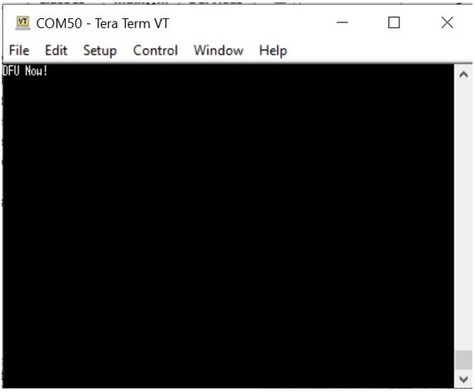
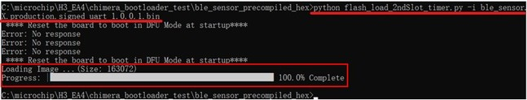
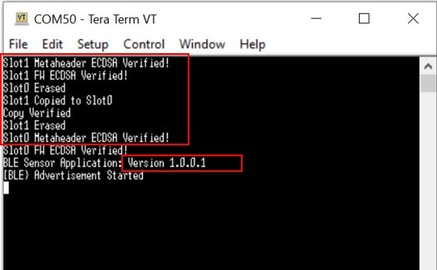

Device Firmware Upgrade(DFU) over serial is the functionality in Bootloader that user uses it to load new image received over serial interface and write into the flash. PC GUI tool(MicrochipUtilityTool.exe) and Python Script are two methods used for DFU over serial. Followings are user guide and demostrantion steps using these two methods to do DFU over serial, the demonstration is to upgrade ble_sensor user application with a new image.
DFU over Serial Using MicrochipUtility Tool
MicrochipUtility is a GUI tool, it suppors OTAU over serial, Zigbee OTAU. The utility tool is provided in Microchip website link. For its user guide and demonstration using this tool to do serial DFU, click Serial Bootloader Demo.
DFU over Serial Using Python Script
Pre-requisite:
ble_sensor project as current user application(version 1.0.0.0) wireless_apps_pic32cxbz2_wbz45\apps\ble\advanced_applications\ble_sensor\firmware
Precompiled ble_sensor new image(binary file): wireless_apps_pic32cxbz2_wbz45\apps\ble\advanced_applications\ble_sensor\precompiled_hex\ble_sensor.X.production.signed_uart_1.0.0.1.bin
Bootloader:
Precompiled hex file for GPIO Trigger mode DFU: wireless_apps_pic32cxbz2_wbz45\apps\bootloader\bootloader\precompiled_hex\bootloader.X.production.hex
Precompiled hex file for Timer Based Trigger DFU: wireless_apps_pic32cxbz2_wbz45\apps\bootloader\bootloader\precompiled_hex\bootloader_timer.X.production.hex
Python Script Files:
For GPIO Trigger mode DFU: flash_load_2ndSlot.py, progctrl.py (wireless_pic32cxbz_wbz\utilities\pic32cx-bz\dfuPythonScripts\)
For Timer Based Trigger DFU: flash_load_2ndSlot_timer.py, progctrlOptimized.py (wireless_pic32cxbz_wbz\utilities\pic32cx-bz\dfuPythonScripts\)
Hardware: WBZ451 Curiosity Board
How to Run Python Script:
For GPIO Trigger DFU, execute python script by below command:
python flash_load_2ndSlot.py -i image.bin
For Timer Based Trigger DFU, execute python script by below command:
python flash_load_2ndSlot_timer.py -i image.bin
image.bin is the binary file of new user image, this binary file is generated from user application by MPLAB X IDE. It could be other file name from user’s own application, it may have path name before the file.
DFU over Serial Demonstration:
Following are steps to operate DFU over seiral, programing a new user image by using Bootloader.
Preparation: Create and Program Unified image
Click Loadables, Verify Bootloader Precompiled Hex file is Added
Tip: For Timer Based Trigger DFU, user need to remove this hex file that is for GPIO Trigger DFU, and add another timer based bootloader hex(bootloader_timer.X.production.hex) as Loadable File.
Then on the IDE Tools bar, click Clean and Build Main Project icon to build the project. Since the project has a loadable hex file added, code building will create a unified image hex file ble_sensor.X.production.signed.unified.hex
Unified Image Contains Both User Application and Bootloader

Program Unified Image to Board

For creating unified image, user can refer to Bootloader - section Configure User Application to use Bootloader - Add Bootloader as Lodable File/Project to Create Unified Image to know more details.
Enter into DFU Mode
For the provided bootloader example, DFU mode is triggered by SW2 Button on WBZ451 Curiosity board. So press and hold SW2 Button first, then short press Reset button(SW1) to restart the firmware, the firmware will enter DFU mode. Opening Tera Term on PC, and configure it as 115200/8bit/none Parity/1 Stop bit, will see the message output as “DFU Now!”.
Display Message "DFU Now!" in Tera Term
This message means the board is under DFU mode.
Run Python Script to do DFU
Close Tera Term and open Windows Command Prompt, go to the directory where python script files and binary image file are located and execute python script as below:
python flash_load_2ndSlot.py -i ble_sensor.X.production.signed_uart_1.0.0.1.bin
To run above python script, user may need to copy those python script files and binary image file into a same folder. However, python script also support file with aboslute path name or relative path name.
Execute Python Script and see DFU Progress
Tip: For Timer Based Trigger DFU, it uses different python script files, execute python script as below:
python flash_load_2ndSlot_timer.py -i ble_sensor.X.production.signed_uart_1.0.0.1.bin
Execute Python Script, Reset Board, and see DFU Progress
The % progress will tell the DFU progress. Once it is finished as 100%, the new image is copied to slot1 of internal flash memory.
Reset Board to Start New Firmware
Python script has not supported firmware automatical reboot after DFU completion, so need manually reset the board to start new firmware.
Once DFU progress achieves 100% complete, close Windows Command Prompt and open Tera Term to see the message output. On the board, press the Reset button(SW1) to restart, the bootloader will then copy new firmware from flash memory slot1 to slot0. After that, bootloader will jump and start new user image in slot0. On Tera Term, user will see messages as shown below, original firmware version is 1.0.0.0, now firmware version is 1.0.0.1, the DFU is successful.
Display Message About Firmware Erase/Copy/Verify in Tera Term
Tip: For Timer Based Trigger DFU, it doesn't need manual reset the board to start new image. Timer Based Trigger bootloader will automatically copy new user image and jump to start it.
Tip: Depending on if user has enabled Use Firmware Signature Verification API in Bootloader in Bootloader Services component or not, the bootloader code may or may not verify metaheader and firmware using specified method. If bootloader has verified metaheader and firmware, their verification result will be displayed in Tera Term.